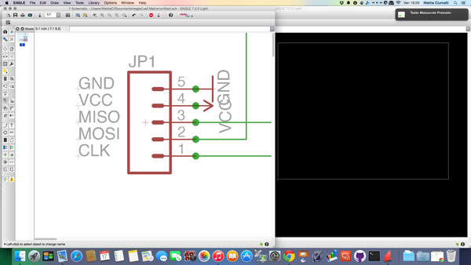

For this week we have to add an output device to a microcontroller board you've designed and program it to do something.
In order to work on the final project, I decided to start testing different output devices to be used as graphical data visualization of the accelerometer.
I have considered three possible output devices:
The LCD display is the most obvious choice, but less attractive graphically. The display can shown what comes out in the serial monitor, thus showing the real-time values of the accelerometer.
The kind of LCD display that i will use for the excercise is one of the most common, with 2 lines of 16 characters.
According to the following scheme, I connected the display to SatshaKit (connected with the MPU6050)
After connecting everything I started looking for how to interface the two components, and shows on the display the data of the accelerometer.
I consulted the library "LiquidCristal.h" and tried to figure out what features I would come in handy, then I took a sketch used for the MPU6050 (used during week 10) and I've adapted.
#include<Wire.h>
#include <LiquidCrystal.h>
LiquidCrystal lcd(12, 11, 5, 4, 3, 2);
const int MPU=0x68;
int AcX,AcY;
void setup()
{
Serial.begin(9600);
lcd.begin(20, 4);
Wire.begin();
Wire.beginTransmission(MPU);
Wire.write(0x6B);
Wire.write(0);
Wire.endTransmission(true);
}
void loop()
{
Wire.beginTransmission(MPU);
Wire.write(0x3B);
Wire.endTransmission(false);
Wire.requestFrom(MPU,14,true);
AcX=Wire.read()<<8|Wire.read();
AcY=Wire.read()<<8|Wire.read();
lcd.setCursor(0,0);
lcd.print("Accelerometro");
Serial.print("AcX = "); Serial.print(AcX);
lcd.setCursor(0,1);
lcd.print("X=");
lcd.print(AcX);
Serial.print(" | AcY = "); Serial.print(AcY);
lcd.setCursor(7,1);
lcd.print("Y=");
lcd.print(AcY);
delay(300);
lcd.clear();
}I had to limit the output to only 2 variants (X and Y of the accelerometer) as the space of the display it is limited, as mentioned above, to 16 characters per line.
Using a display bigger maybe, you can show the full range of data produced by MPU6050 (XYZ of accelerometer and XYZ of gyroscope).
In conclusion, the use of the display allows you to see precisely the value of the data collected by the sensor, although with a fairly basic layout.
*You need to use Wire.h and LiquidCrystal.h libraries.
Another simple exercise that I tried to do this week is to use an RGB LED and change the color using three buttons, one per color channel.
To to this i used:
This is the schema of the connection:
For the code, i've found a good tutorial at http://www.nudatech.com whit explain step by step the construction of the sketch.
First the sketch define the cconstants and globals:
const byte NUM_COLORS = 3;
// REQUIRED INTERVAL (IN MS) BETWEEN ANY CHANGE TO A COLOR CHANNEL
const byte COL_INTERVAL = 50;
// VALUE ADDED OR SUBTRACTED TO A COLOR CHANNEL WHEN CHANGING ITS VALUE
const byte COL_VAR = 5;
const byte DELAY_TIME = 17; // ~60FPS
const byte PIN_COLORS[] = { 3, 5, 6 }; // OUTPUT PINS
const byte PIN_BUTTNS[] = { 9, 10, 11 }; // INPUT PINS
// COLOR OF EACH CHANNEL
byte VAL_COLORS[] = { 255, 255, 255 };
// TIMER USED TO CHANGE A COLOR QUITE SLOWLY
byte TIMER_COLORS[] = { 0, 0, 0 };
Then, in the setup, the sketch initialize the pins of the led to to turn them off
void setup()
{
// cycle through the 3 channels
for(int i = 0; i < NUM_COLORS; i++)
{
pinMode(PIN_COLORS[i], OUTPUT);
pinMode(PIN_BUTTNS[i], INPUT);
analogWrite(PIN_COLORS[i], 255);
}
}
Finally in the loop we can find how the sketch work: While a button is pushed (value is HIGH) the brightness of corresponding colour is increased up to its maximum value, whereas the brightness of a colour is decreased until it’s off when a button is not pushed (value is LOW).
void loop()
{
// cycle through the 3 buttons/channels
for(int i = 0; i < NUM_COLORS; i++)
{
byte button = digitalRead(PIN_BUTTNS[i]);
if(HIGH == button)
{
if(VAL_COLORS[i] > 0)
{
TIMER_COLORS[i] += DELAY_TIME;
if(TIMER_COLORS[i] > COL_INTERVAL)
{
VAL_COLORS[i] -= COL_VAR;
TIMER_COLORS[i] = 0;
}
}
}
else // button is LOW, not pushed
{
if(VAL_COLORS[i] < 255)
{
TIMER_COLORS[i] += DELAY_TIME;
if(TIMER_COLORS[i] > COL_INTERVAL)
{
VAL_COLORS[i] += COL_VAR;
TIMER_COLORS[i] = 0;
}
}
}
// write color for LED i
analogWrite(PIN_COLORS[i], VAL_COLORS[i]);
}
// pause for a short time
delay(DELAY_TIME);
}
This is the circuit while is working:
With the use of a single LED you can produce multiple color combinations: this could be useful if, for the final project, I wanted to create something that gives a visual impact of the value obtained from the sensor, no need to have the accuracy of numerical data.
The RGB LED array is a square of 8x8 LED RGB. Programming it you can decide which LED light and with what combination of color: this allows you to create forms, line or write text or numbers (using a special library).
The Matrix that i've tried is the MOD-LED8x8RGB: it is an intelligent 8×8 RGB LED module, it allow many modules to be stacked together thanks to the series of components already present in the board.
To start testing the matrix, the manufacturer provides 2 libraries already ready: led8x8rgb.h and font.h.
In led8x8rgb.h library you can find the principal function for draw and manage the text object. The main functions are:
So, for example, if in the loop you write this
void loop() {
cntr++;
vClear();
color=0;
drawLine(1,1,8,1);
color=1;
drawLine(1,2,8,2);
color=2;
drawLine(1,3,8,3);
color=3;
drawLine(1,4,8,4);
color=4;
drawLine(1,5,8,5);
color=5;
drawLine(1,6,8,6);
color=6;
drawLine(1,7,8,7);
color=7;
drawLine(1,8,8,8);
Transfer();
}
you will ottain this
so it easy to understand the codes 0 to 7 in which colors match.
The same way it is very easy to launch forms:
void loop() {
cntr++;
vClear();
color=1;
drawRectangle(1,1,8,8);
color=7;
drawRectangle(2,2,7,7);
color=1;
drawRectangle(3,3,6,6);
color=7;
drawRectangle(4,4,5,5);
Transfer();
}
As for the management of the text, it is also very simple if you use the library functions. Besides library "lcd8x8rgb.h" in this case we also need the "font.h": this library defines the "design" rules of the alphanumeric characters and punctuation marks.Write a sentence is quite easy, this is an example:
#include "SPI.h"
#include "font.h"
#include "lcd8x8rgb.h"
boolean point = 1;
unsigned char h[] = " Led Matrix with SatshaKit ";
void setup() {
Serial.begin(9600);
SPI.setDataMode(SPI_MODE1);
SPI.setClockDivider(SPI_CLOCK_DIV64);
SPI.begin();
pinMode(chipSelectPin, OUTPUT);
vClear();
}
void loop() {
point =! point; //code for writing a scrolling sentence
scrollString(h, point);
Transfer();
delay(100);
vClear();
}
By default the "scrollingString" function change the color for each character in the sentence written at the beginning. If you want to have only one color for all the sentence you have to modify the function in the library.
void scrollString(unsigned char c[], boolean directions) { //draw a scrolling string
int len;
for (len = 0; c[len]; len++);
if (directions) {
for (int i = len - 1; i >= 0; i--) {
scrollCharRight(c[i]);
color++; if (color>7) color = 1;
}
}
else {
for (int i = 0; c[i]; i++) {
scrollCharLeft(c[i]);
color++; if (color>7) color = 1;
}
}
theEnder(directions);
}
Just comment the lines "color ++; ....." and then define the color chosen in the loop for the program.
After testing a Led matrix ready, I decided to try out a board for a 8x8 matrix LED RG.
The idea is to create a board that will enable me to use only three microcontroller pins (SCK, MISO, MOSI) using the shift register, following some example on internet.
To do this, I used:
preparing 5-pin header for connection with the microcontroller

When, in the view of the board, I had to arrange the components and draw all the tracks I realized that making everything on a single layer was impossible, so I decided to start experiencing the double layer board.
In order to maintain the orientation of the double layer FR4 while changing side, we have built an alignment grid that would allow us to move the piece while maintaining the initial posizone.
Once lasered the board I noticed some problems:
1 - I realized that the component used in eagle and the one that I had were different: the distance between the pins of the matrix and those on board was different.
2 - The holes of the VIA and of the pin matrix were too small: this means that when the laser goes to pierce the board, heats the copper and makes them detach from the board.
So I went back in Ealge, I corrected the distance between pins of the component and I expanded the holes so as to avoid overheating occured during the engraving with laser.
And finally i have esported again the corrected .png file
this is the top layer
and this is the bottom layer
Then i start to soldering the wire in the VIA
and then the other component and the matrix, and this is the final result
I have used the normal 220 Ohm resistor because i don't have the Smd one, i have rebuild some traces with wires and finally i have tested it
{kind=link}
{kind=link}